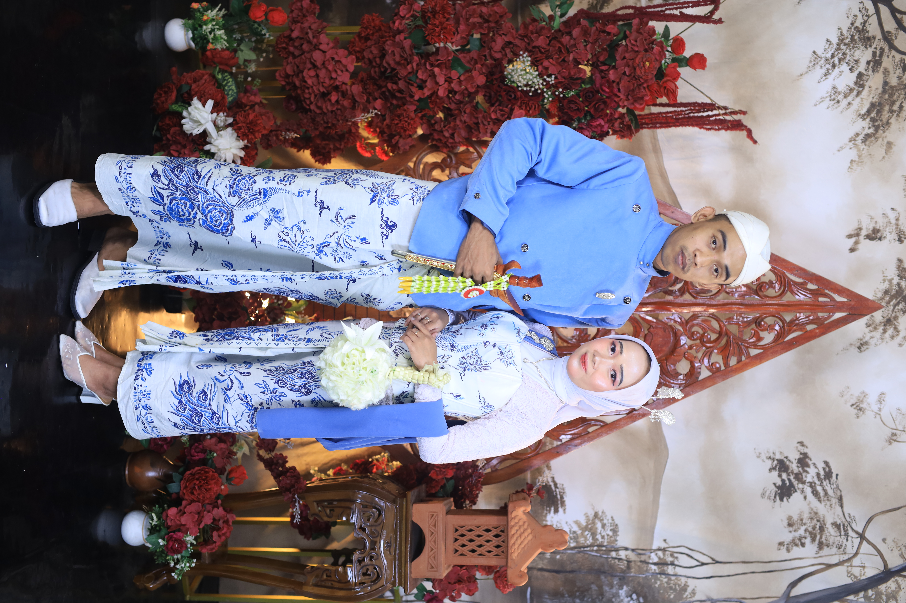
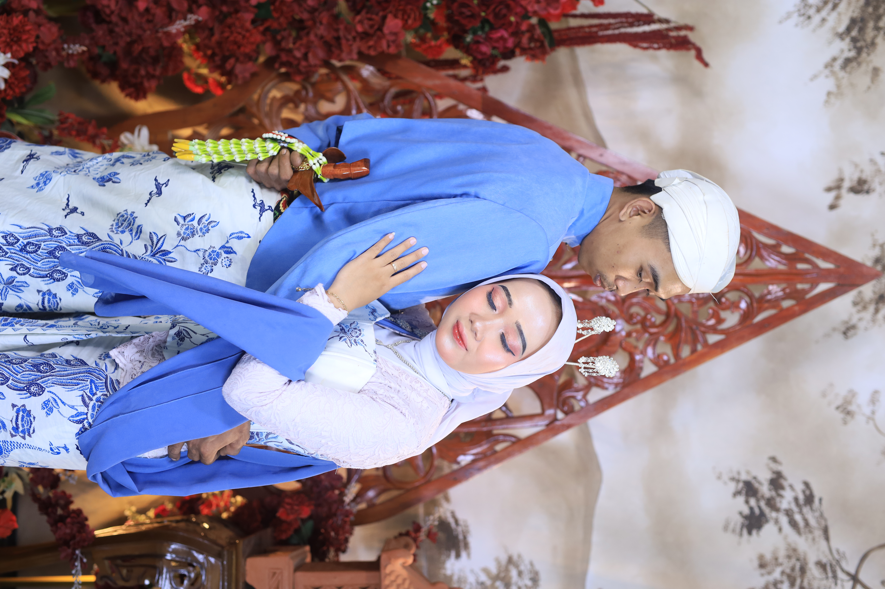
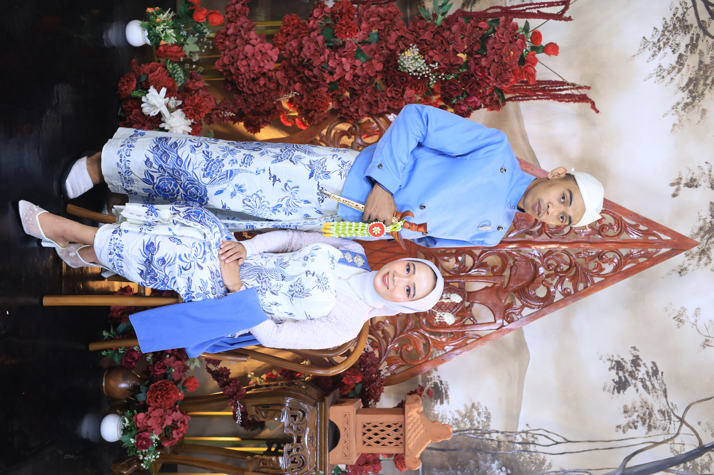
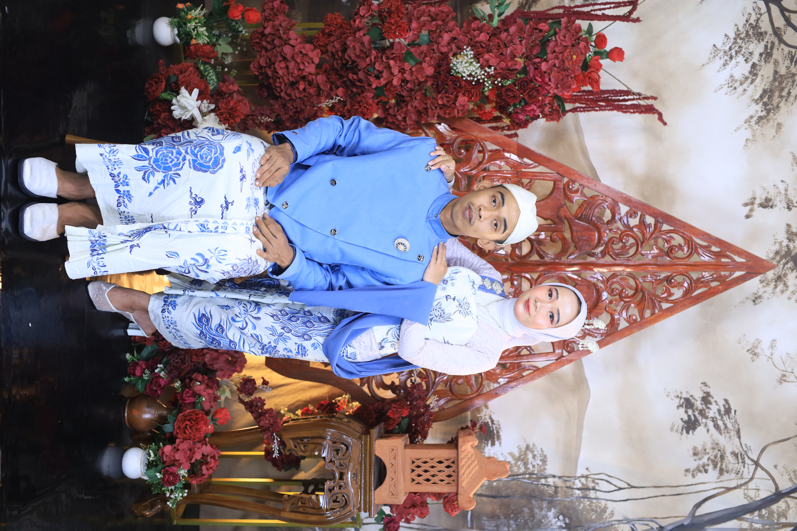
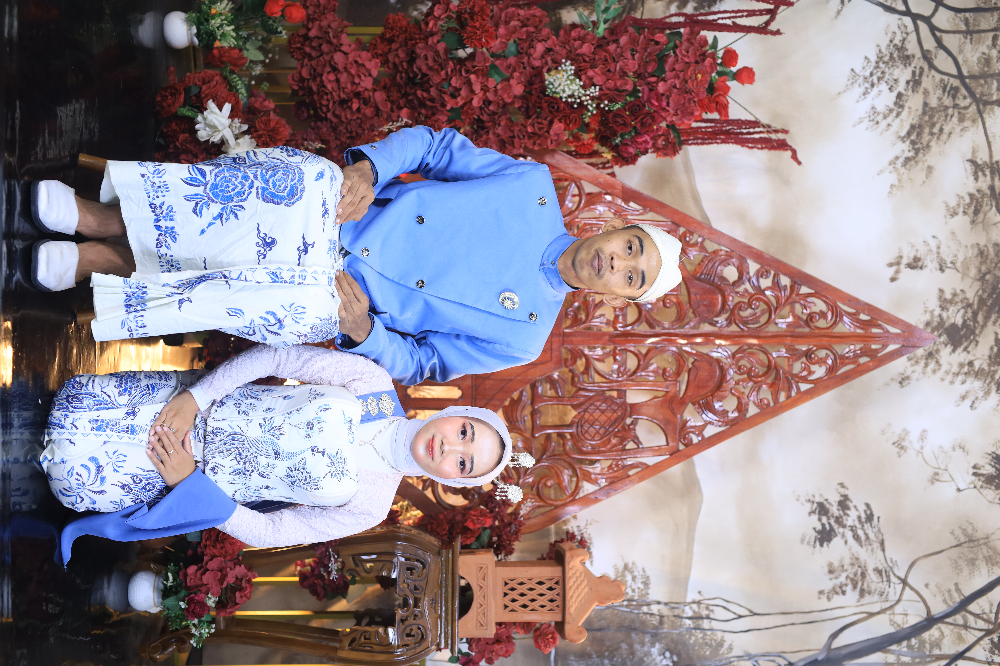
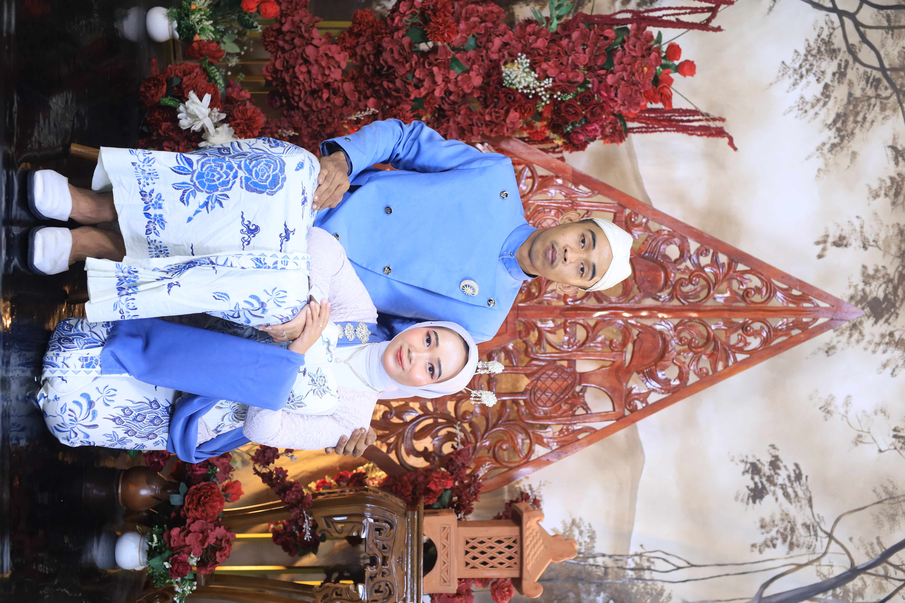
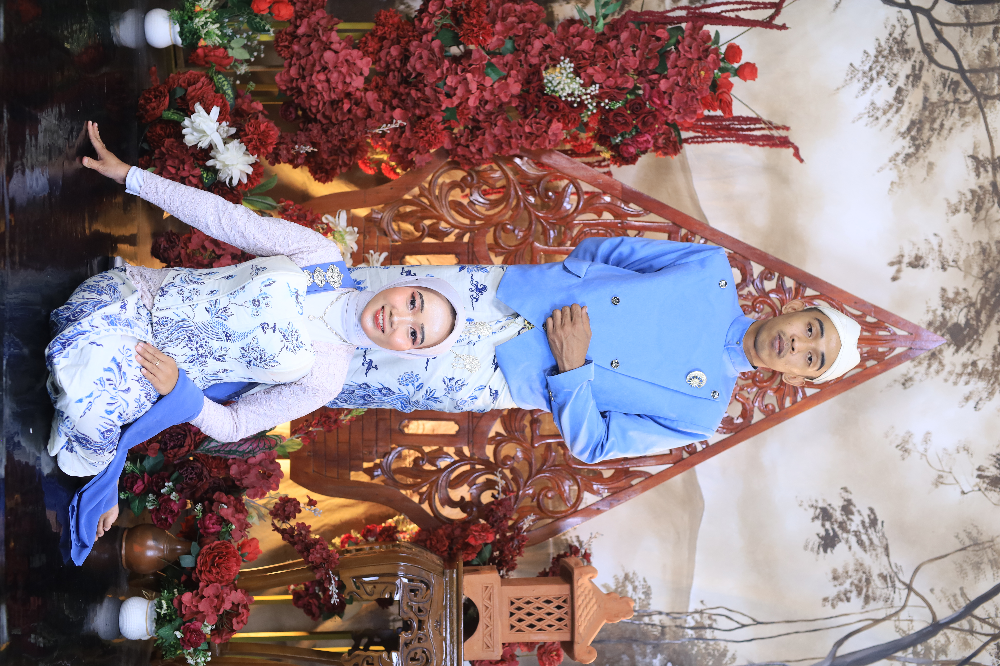
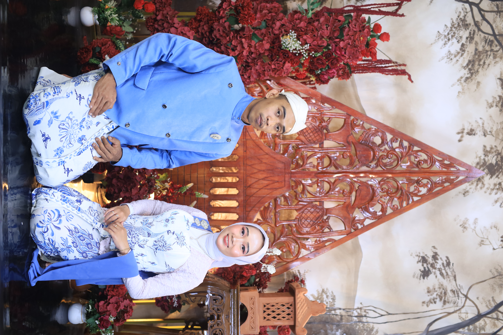
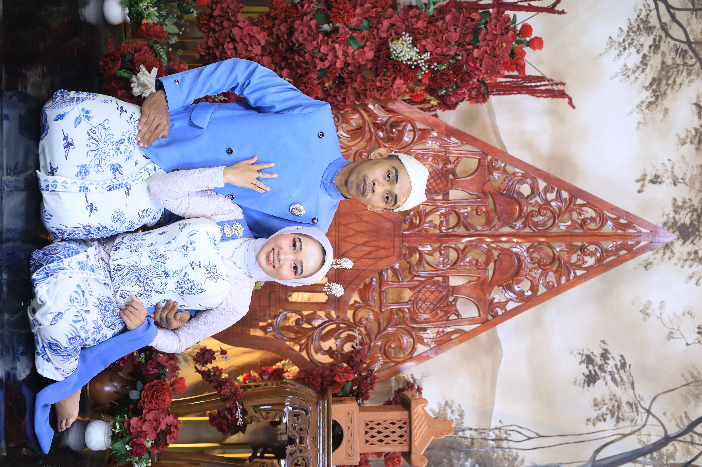
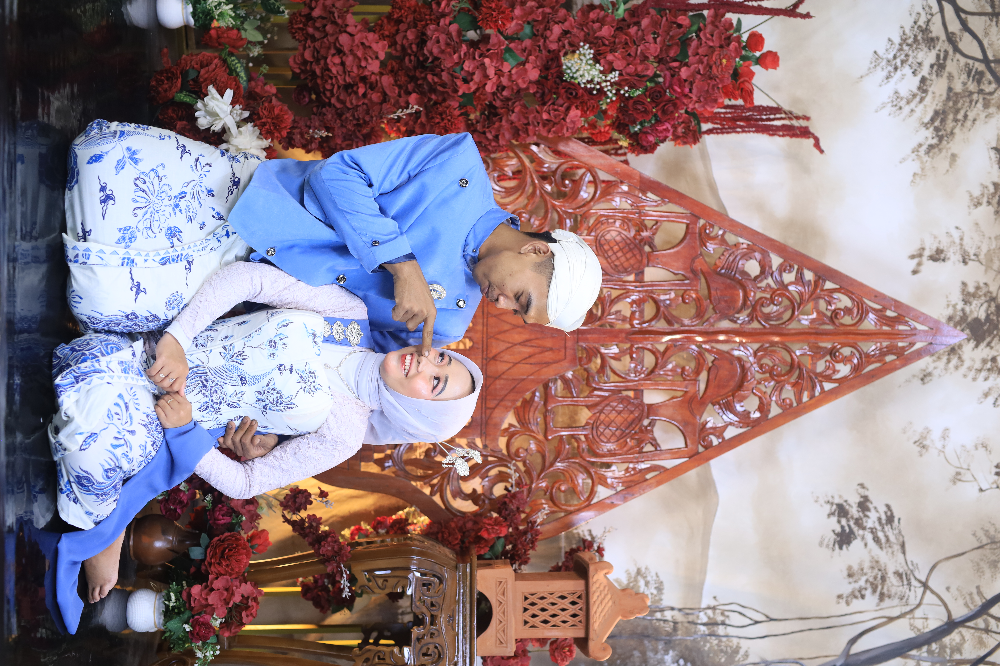

-


 The Wedding OfDiah&DidikKepada Yth;
The Wedding OfDiah&DidikKepada Yth;
Bapak/Ibu/Saudara/iNama Tamu -
Assalamu’alaikum Warahmatullahi Wabarakatuh"Maha Suci Allah yang telah menciptakan makhluk-Nya berpasang-pasangan. Ya Allah semoga ridho-Mu tercurah mengiringi pernikahan kami."
-
✤ QS. Ar-Rum : 21 ✤وَمِنْ اٰيٰتِهٖٓ اَنْ خَلَقَ لَكُمْ مِّنْ اَنْفُسِكُمْ اَزْوَاجًا لِّتَسْكُنُوْٓا اِلَيْهَا وَجَعَلَ بَيْنَكُمْ مَّوَدَّةً وَّرَحْمَةً"Dan di antara tanda-tanda (kebesaran)-Nya ialah Dia menciptakan pasangan-pasangan untukmu dari jenismu sendiri, agar kamu cenderung dan merasa tenteram kepadanya, dan Dia menjadikan di antaramu rasa kasih dan sayang."
-
Diah Restu Sulistia Ningsih, S.AkPutri Kedua dari
Bapak Suwono & Ibu SumisihdenganDidik MarwantoPutra Kedua dari
Bapak Darkum & Ibu Sutijah -
✤ Tasyakuran ✤Pukul 09.00 WIB - SelesaiJumat25
Desember 2026✤ Kediaman Mempelai Pria ✤Desa Jurangbahas RT 01 RW 03, Kec. Wangon, Kab. BanyumasPetunjuk Ke Lokasi -
✤ Akad Nikah ✤Pukul 09.00 WIB - SelesaiSabtu26
Desember 2026✤ Kediaman Mempelai Wanita ✤Desa Jurangbahas RT 04 RW 03, Kec. Wangon, Kab. BanyumasPetunjuk Ke Lokasi -
✤ Resepsi Pernikahan ✤Pukul 07.00 WIB - SelesaiJumat & Sabtu25 & 26 Desember 2026✤ Kediaman Mempelai Wanita ✤Desa Jurangbahas RT 04 RW 03, Kec. Wangon, Kab. BanyumasPetunjuk Ke Lokasi
-
Our Love StorySatu Desa
Satu desa, beda RT. Satu sekolah, sebangku kenangan. Kita berteman, bermain, tumbuh tanpa rencana. Tanpa tahu kelak akan berbagi nama yang sama.
Dipertemukan Kembali (2019)Semesta mempertemukan kami kembali pada suatu momen. Obrolan kecil tumbuh jadi rasa yang tak kecil lagi. Sejak hari itu, chat tak pernah sepi, intens, nyaman. Dan pelan-pelan jadi rumah.
Tunangan (17 Agustus 2024)Perjalanan kami bukan tanpa ujian dan cerita.
Namun setiap proses yang dilewati justru membawa kami semakin yakin satu sama lain.
Sampai pada akhirnya, pada 17 Agustus 2024 kami dipertemukan dalam sebuah ikatan yang penuh
doa dan restu keluarga.Menikah (26 Desember 2026)Kini, setelah sekian banyak rindu yang kami simpan, sekian banyak doa yang kami langitkan,
dan sekian banyak waktu yang kami lewati dalam jarak - kami sampai dititik ini.
Bismillah, kami menyatukan dua nama, dua doa.
Dari teman kecil yang pernah tak saling sapa, kini jadi teman surga yang tak akan berpisah. -
Wedding Gallery










*Geser ke bawah untuk melihat lebih banyak -
Berikan Ucapan
0 Ucapaan & Doa
Memuat ucapan... -
Tanda KasihDoa Restu Anda merupakan
karunia yang sangat berarti bagi kami.
Dan jika memberi adalah ungkapan tanda kasih Anda,
Anda dapat memberi kado secara cashless.0859-1214-1847DANA : Diah Restu Sulistia Ningsih0838-4426-4158DANA : Didik Marwanto
✤ Kirim Hadiah ✤Penerima: Diah Restu/Didik
Jurangbahas RT 4 / RW 3, Kec. Wangon,
Kab. Banyumas, Jawa Tengah -
Merupakan suatu kebahagiaan dan kehormatan bagi kami, apabila Bapak/Ibu/Saudara/i, berkenan hadir dan memberikan do'a restu kepada kedua mempelai.Wassalamu'alaikum Warahmatullahi WabarakatuhKeluarga Bpk.Suwono
& SumisihKeluarga Bpk.Darkum
& Sutijah